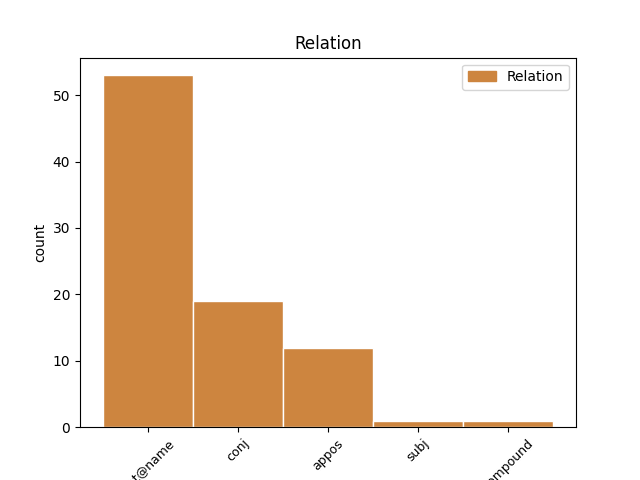
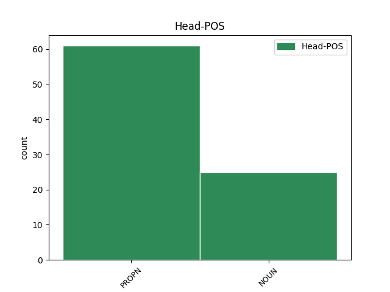
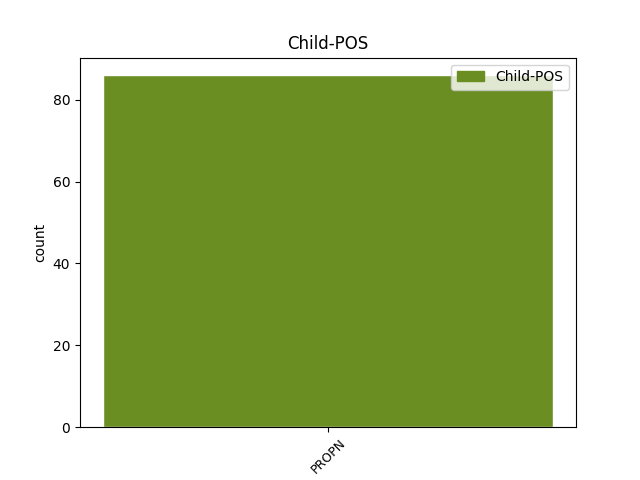

Distribution of features within this leaf



Agreement Rules sorted by frequency.
- When the dependent token is the flat multiword expression(flat@name) of the head token, and the dependent token is PROPN.
1 Tháinig _ _ _ _ 0 _ _ _
2 imní _ _ _ _ 0 _ _ _
3 airsean _ _ _ _ 0 _ _ _
4 de _ _ _ _ 0 _ _ _
5 bharr _ _ _ _ 0 _ _ _
6 Éirí _ _ _ _ 0 _ _ _
7 Amach _ _ _ _ 0 _ _ _
8 1916 _ _ _ _ 0 _ _ _
9 ; _ _ _ _ 0 _ _ _
10 bhí _ _ _ _ 0 _ _ _
11 mórchuid _ _ _ _ 0 _ _ _
12 den _ _ _ _ 0 _ _ _
13 troid _ _ _ _ 0 _ _ _
14 thart _ _ _ _ 0 _ _ _
15 ar _ _ _ _ 0 _ _ _
16 Fhaiche _ _ _ _ 0 _ _ _
17 Stiabhna _ _ _ _ 0 _ _ _
18 agus _ _ _ _ 0 _ _ _
19 , _ _ _ _ 0 _ _ _
20 mar _ _ _ _ 0 _ _ _
21 a _ _ _ _ 0 _ _ _
22 tharla _ _ _ _ 0 _ _ _
23 , _ _ _ _ 0 _ _ _
24 Conraitheoir _ _ _ _ 0 _ _ _
25 gníomhach _ _ _ _ 0 _ _ _
26 Liam Liam PROPN Noun Case=NomAcc|Gender=Masc|Number=Sing 0 _ _ _
27 Ó _ _ _ _ 0 _ _ _
28 Briain Briain PROPN Noun Case=NomAcc|Gender=Masc|Number=Sing 26 flat@name _ _
29 istigh _ _ _ _ 0 _ _ _
30 ina _ _ _ _ 0 _ _ _
31 lár _ _ _ _ 0 _ _ _
32 leis _ _ _ _ 0 _ _ _
33 an _ _ _ _ 0 _ _ _
34 Arm _ _ _ _ 0 _ _ _
35 Cathartha _ _ _ _ 0 _ _ _
36 . _ _ _ _ 0 _ _ _
1 Tá _ _ _ _ 0 _ _ _
2 an _ _ _ _ 0 _ _ _
3 báchrán _ _ _ _ 0 _ _ _
4 an-searbh _ _ _ _ 0 _ _ _
5 le _ _ _ _ 0 _ _ _
6 hól _ _ _ _ 0 _ _ _
7 .. _ _ _ _ 0 _ _ _
8 Tá _ _ _ _ 0 _ _ _
9 an _ _ _ _ 0 _ _ _
10 Chomhairle _ _ _ _ 0 _ _ _
11 seo _ _ _ _ 0 _ _ _
12 ar _ _ _ _ 0 _ _ _
13 cheann _ _ _ _ 0 _ _ _
14 de _ _ _ _ 0 _ _ _
15 na _ _ _ _ 0 _ _ _
16 naoi _ _ _ _ 0 _ _ _
17 gcomhpháirtí _ _ _ _ 0 _ _ _
18 NASC _ _ _ _ 0 _ _ _
19 - _ _ _ _ 0 _ _ _
20 is _ _ _ _ 0 _ _ _
21 iad _ _ _ _ 0 _ _ _
22 na _ _ _ _ 0 _ _ _
23 cinn _ _ _ _ 0 _ _ _
24 eile _ _ _ _ 0 _ _ _
25 ná _ _ _ _ 0 _ _ _
26 : _ _ _ _ 0 _ _ _
27 Comhairlí _ _ _ _ 0 _ _ _
28 Contae _ _ _ _ 0 _ _ _
29 Chorcaigh _ _ _ _ 0 _ _ _
30 , _ _ _ _ 0 _ _ _
31 Dhún _ _ _ _ 0 _ _ _
32 na _ _ _ _ 0 _ _ _
33 nGall _ _ _ _ 0 _ _ _
34 , _ _ _ _ 0 _ _ _
35 Mhaigh Maigh PROPN Noun Case=Gen|Form=Len|Gender=Masc|Number=Sing 0 _ _ _
36 Eo _ _ _ _ 0 _ _ _
37 agus _ _ _ _ 0 _ _ _
38 Chiarraí Ciarraí PROPN Noun Case=Gen|Form=Len|Gender=Masc|Number=Sing 35 conj _ SpaceAfter=No
39 , _ _ _ _ 0 _ _ _
40 Comhairle _ _ _ _ 0 _ _ _
41 Chathair _ _ _ _ 0 _ _ _
42 na _ _ _ _ 0 _ _ _
43 Gaillimhe _ _ _ _ 0 _ _ _
44 , _ _ _ _ 0 _ _ _
45 Ollscoil _ _ _ _ 0 _ _ _
46 na _ _ _ _ 0 _ _ _
47 hÉireann _ _ _ _ 0 _ _ _
48 i _ _ _ _ 0 _ _ _
49 nGaillimh _ _ _ _ 0 _ _ _
50 , _ _ _ _ 0 _ _ _
51 Údarás _ _ _ _ 0 _ _ _
52 na _ _ _ _ 0 _ _ _
53 Gaeltachta _ _ _ _ 0 _ _ _
54 agus _ _ _ _ 0 _ _ _
55 Údarás _ _ _ _ 0 _ _ _
56 Réigiúnach _ _ _ _ 0 _ _ _
57 an _ _ _ _ 0 _ _ _
58 Iarthair _ _ _ _ 0 _ _ _
59 . _ _ _ _ 0 _ _ _
1 Tháinig _ _ _ _ 0 _ _ _
2 imní _ _ _ _ 0 _ _ _
3 airsean _ _ _ _ 0 _ _ _
4 de _ _ _ _ 0 _ _ _
5 bharr _ _ _ _ 0 _ _ _
6 Éirí _ _ _ _ 0 _ _ _
7 Amach _ _ _ _ 0 _ _ _
8 1916 _ _ _ _ 0 _ _ _
9 ; _ _ _ _ 0 _ _ _
10 bhí _ _ _ _ 0 _ _ _
11 mórchuid _ _ _ _ 0 _ _ _
12 den _ _ _ _ 0 _ _ _
13 troid _ _ _ _ 0 _ _ _
14 thart _ _ _ _ 0 _ _ _
15 ar _ _ _ _ 0 _ _ _
16 Fhaiche _ _ _ _ 0 _ _ _
17 Stiabhna _ _ _ _ 0 _ _ _
18 agus _ _ _ _ 0 _ _ _
19 , _ _ _ _ 0 _ _ _
20 mar _ _ _ _ 0 _ _ _
21 a _ _ _ _ 0 _ _ _
22 tharla _ _ _ _ 0 _ _ _
23 , _ _ _ _ 0 _ _ _
24 Conraitheoir conraitheoir NOUN Noun Case=NomAcc|Gender=Masc|Number=Sing 0 _ _ _
25 gníomhach _ _ _ _ 0 _ _ _
26 Liam Liam PROPN Noun Case=NomAcc|Gender=Masc|Number=Sing 24 appos _ _
27 Ó _ _ _ _ 0 _ _ _
28 Briain _ _ _ _ 0 _ _ _
29 istigh _ _ _ _ 0 _ _ _
30 ina _ _ _ _ 0 _ _ _
31 lár _ _ _ _ 0 _ _ _
32 leis _ _ _ _ 0 _ _ _
33 an _ _ _ _ 0 _ _ _
34 Arm _ _ _ _ 0 _ _ _
35 Cathartha _ _ _ _ 0 _ _ _
36 . _ _ _ _ 0 _ _ _
1 Tá _ _ _ _ 0 _ _ _
2 sé _ _ _ _ 0 _ _ _
3 fóirsteanach _ _ _ _ 0 _ _ _
4 go _ _ _ _ 0 _ _ _
5 maith _ _ _ _ 0 _ _ _
6 , _ _ _ _ 0 _ _ _
7 mar _ _ _ _ 0 _ _ _
8 sin _ _ _ _ 0 _ _ _
9 , _ _ _ _ 0 _ _ _
10 go _ _ _ _ 0 _ _ _
11 bhfuil _ _ _ _ 0 _ _ _
12 Golway _ _ _ _ 0 _ _ _
13 tar _ _ _ _ 0 _ _ _
14 éis _ _ _ _ 0 _ _ _
15 stair _ _ _ _ 0 _ _ _
16 Rannóg _ _ _ _ 0 _ _ _
17 Dóiteáin _ _ _ _ 0 _ _ _
18 Nua-Eabhrac _ _ _ _ 0 _ _ _
19 le _ _ _ _ 0 _ _ _
20 trí _ _ _ _ 0 _ _ _
21 chéad _ _ _ _ 0 _ _ _
22 bliain _ _ _ _ 0 _ _ _
23 anuas _ _ _ _ 0 _ _ _
24 a _ _ _ _ 0 _ _ _
25 scríobh _ _ _ _ 0 _ _ _
26 . _ _ _ _ 0 _ _ _
27 Tá _ _ _ _ 0 _ _ _
28 sé _ _ _ _ 0 _ _ _
29 le _ _ _ _ 0 _ _ _
30 fáil _ _ _ _ 0 _ _ _
31 ar _ _ _ _ 0 _ _ _
32 lch. _ _ _ _ 0 _ _ _
33 202-203 _ _ _ _ 0 _ _ _
34 de _ _ _ _ 0 _ _ _
35 S1067 _ _ _ _ 0 _ _ _
36 , _ _ _ _ 0 _ _ _
37 Scoil scoil NOUN Noun Case=NomAcc|Gender=Fem|Number=Sing 0 _ _ _
38 na _ _ _ _ 0 _ _ _
39 gCailíní _ _ _ _ 0 _ _ _
40 , _ _ _ _ 0 _ _ _
41 Doirí Doirí PROPN Noun Case=NomAcc|Gender=Masc|Number=Sing 37 compound _ _
42 Beaga _ _ _ _ 0 _ _ _
43 . _ _ _ _ 0 _ _ _
1 D' _ _ _ _ 0 _ _ _
2 iúntaigh iúntaigh NOUN Noun Case=NomAcc|Gender=Fem|Number=Sing 0 _ _ _
3 Pinocchio Pinocchio PROPN Noun Case=NomAcc|Gender=Masc|Number=Sing 2 subj _ _
4 agus _ _ _ _ 0 _ _ _
5 d' _ _ _ _ 0 _ _ _
6 fhéach _ _ _ _ 0 _ _ _
7 sé _ _ _ _ 0 _ _ _
8 air _ _ _ _ 0 _ _ _
9 . _ _ _ _ 0 _ _ _
Disagree Examples:
1 Chomh _ _ _ _ 0 _ _ _
2 maith _ _ _ _ 0 _ _ _
3 le _ _ _ _ 0 _ _ _
4 sin _ _ _ _ 0 _ _ _
5 , _ _ _ _ 0 _ _ _
6 bhronn _ _ _ _ 0 _ _ _
7 Teaghlach teaghlach NOUN Noun Case=NomAcc|Gender=Masc|Number=Sing 0 _ _ _
8 Uí _ _ _ _ 0 _ _ _
9 Ghallchóir Gallchóir PROPN Noun Case=Gen|Gender=Fem|Number=Sing 7 flat@name _ _
10 as _ _ _ _ 0 _ _ _
11 an _ _ _ _ 0 _ _ _
12 Bhun _ _ _ _ 0 _ _ _
13 Bheag _ _ _ _ 0 _ _ _
14 Corn _ _ _ _ 0 _ _ _
15 Cuimhneacháin _ _ _ _ 0 _ _ _
16 Hiúdaí _ _ _ _ 0 _ _ _
17 Bhig _ _ _ _ 0 _ _ _
18 ar _ _ _ _ 0 _ _ _
19 an _ _ _ _ 0 _ _ _
20 chomórtas _ _ _ _ 0 _ _ _
21 . _ _ _ _ 0 _ _ _
1 Má _ _ _ _ 0 _ _ _
2 tá _ _ _ _ 0 _ _ _
3 boird _ _ _ _ 0 _ _ _
4 stáit _ _ _ _ 0 _ _ _
5 agus _ _ _ _ 0 _ _ _
6 comhlachtai _ _ _ _ 0 _ _ _
7 stáir _ _ _ _ 0 _ _ _
8 in _ _ _ _ 0 _ _ _
9 Éirinn _ _ _ _ 0 _ _ _
10 ag _ _ _ _ 0 _ _ _
11 dul _ _ _ _ 0 _ _ _
12 ag _ _ _ _ 0 _ _ _
13 fógairt _ _ _ _ 0 _ _ _
14 mar _ _ _ _ 0 _ _ _
15 ' _ _ _ _ 0 _ _ _
16 phacáiste _ _ _ _ 0 _ _ _
17 ' _ _ _ _ 0 _ _ _
18 ar _ _ _ _ 0 _ _ _
19 leith _ _ _ _ 0 _ _ _
20 d' _ _ _ _ 0 _ _ _
21 Éirinn _ _ _ _ 0 _ _ _
22 , _ _ _ _ 0 _ _ _
23 má _ _ _ _ 0 _ _ _
24 tá _ _ _ _ 0 _ _ _
25 RTÉ _ _ _ _ 0 _ _ _
26 ag _ _ _ _ 0 _ _ _
27 dul _ _ _ _ 0 _ _ _
28 i _ _ _ _ 0 _ _ _
29 gcomhar _ _ _ _ 0 _ _ _
30 le _ _ _ _ 0 _ _ _
31 Sky _ _ _ _ 0 _ _ _
32 maidir _ _ _ _ 0 _ _ _
33 le _ _ _ _ 0 _ _ _
34 dáileadh _ _ _ _ 0 _ _ _
35 na _ _ _ _ 0 _ _ _
36 mbealach _ _ _ _ 0 _ _ _
37 teilifís _ _ _ _ 0 _ _ _
38 Éireannach _ _ _ _ 0 _ _ _
39 ar _ _ _ _ 0 _ _ _
40 bhosca _ _ _ _ 0 _ _ _
41 digiteach _ _ _ _ 0 _ _ _
42 Sky _ _ _ _ 0 _ _ _
43 ar _ _ _ _ 0 _ _ _
44 fud _ _ _ _ 0 _ _ _
45 na _ _ _ _ 0 _ _ _
46 tíre _ _ _ _ 0 _ _ _
47 ( _ _ _ _ 0 _ _ _
48 cinneadh _ _ _ _ 0 _ _ _
49 atá _ _ _ _ 0 _ _ _
50 tar _ _ _ _ 0 _ _ _
51 éis _ _ _ _ 0 _ _ _
52 an-gheit _ _ _ _ 0 _ _ _
53 a _ _ _ _ 0 _ _ _
54 bhaint _ _ _ _ 0 _ _ _
55 as _ _ _ _ 0 _ _ _
56 oifig _ _ _ _ 0 _ _ _
57 an _ _ _ _ 0 _ _ _
58 Aire aire NOUN Noun Case=Gen|Gender=Masc|Number=Sing 0 _ _ _
59 de _ _ _ _ 0 _ _ _
60 Valera Valera PROPN Noun Case=NomAcc|Gender=Masc|Number=Sing 58 flat@name _ SpaceAfter=No
61 , _ _ _ _ 0 _ _ _
62 deirtear _ _ _ _ 0 _ _ _
63 linn _ _ _ _ 0 _ _ _
64 ) _ _ _ _ 0 _ _ _
65 níor _ _ _ _ 0 _ _ _
66 cheart _ _ _ _ 0 _ _ _
67 cur _ _ _ _ 0 _ _ _
68 suas _ _ _ _ 0 _ _ _
69 leis _ _ _ _ 0 _ _ _
70 an _ _ _ _ 0 _ _ _
71 neamhaird _ _ _ _ 0 _ _ _
72 ar _ _ _ _ 0 _ _ _
73 leith _ _ _ _ 0 _ _ _
74 a _ _ _ _ 0 _ _ _
75 dhéananna _ _ _ _ 0 _ _ _
76 meáin _ _ _ _ 0 _ _ _
77 na _ _ _ _ 0 _ _ _
78 Sasasanach _ _ _ _ 0 _ _ _
79 ar _ _ _ _ 0 _ _ _
80 Éirinn _ _ _ _ 0 _ _ _
81 de _ _ _ _ 0 _ _ _
82 ghnáth _ _ _ _ 0 _ _ _
83 . _ _ _ _ 0 _ _ _
1 Tháinig _ _ _ _ 0 _ _ _
2 sé _ _ _ _ 0 _ _ _
3 ar _ _ _ _ 0 _ _ _
4 Rí rí NOUN Noun Case=NomAcc|Gender=Masc|Number=Sing 0 _ _ _
5 Laighin Laighin PROPN Noun Case=Gen|Gender=Fem|Number=Sing 4 flat@name _ _
6 ar _ _ _ _ 0 _ _ _
7 Tountinna _ _ _ _ 0 _ _ _
8 . _ _ _ _ 0 _ _ _
1 Níl _ _ _ _ 0 _ _ _
2 aon _ _ _ _ 0 _ _ _
3 mheas _ _ _ _ 0 _ _ _
4 tuillte _ _ _ _ 0 _ _ _
5 ach _ _ _ _ 0 _ _ _
6 an _ _ _ _ 0 _ _ _
7 oiread _ _ _ _ 0 _ _ _
8 ag _ _ _ _ 0 _ _ _
9 an _ _ _ _ 0 _ _ _
10 nGinearál ginearál NOUN Noun Case=Gen|Definite=Def|Gender=Masc|NounType=Weak|Number=Plur 0 _ _ _
11 Seán Seán PROPN Noun Case=NomAcc|Gender=Masc|Number=Sing 10 flat@name _ _
12 Mac _ _ _ _ 0 _ _ _
13 Eoin _ _ _ _ 0 _ _ _
14 agus _ _ _ _ 0 _ _ _
15 an _ _ _ _ 0 _ _ _
16 Ginearál _ _ _ _ 0 _ _ _
17 Risteárd _ _ _ _ 0 _ _ _
18 Ó _ _ _ _ 0 _ _ _
19 Maolchatha _ _ _ _ 0 _ _ _
20 , _ _ _ _ 0 _ _ _
21 iar-ardshaighdiúirí _ _ _ _ 0 _ _ _
22 a _ _ _ _ 0 _ _ _
23 bhí _ _ _ _ 0 _ _ _
24 anois _ _ _ _ 0 _ _ _
25 ina _ _ _ _ 0 _ _ _
26 bpolaiteoirí _ _ _ _ 0 _ _ _
27 , _ _ _ _ 0 _ _ _
28 agus _ _ _ _ 0 _ _ _
29 a _ _ _ _ 0 _ _ _
30 chuir _ _ _ _ 0 _ _ _
31 i _ _ _ _ 0 _ _ _
32 gcoinne _ _ _ _ 0 _ _ _
33 ceannach _ _ _ _ 0 _ _ _
34 arm _ _ _ _ 0 _ _ _
35 agus _ _ _ _ 0 _ _ _
36 a _ _ _ _ 0 _ _ _
37 thug _ _ _ _ 0 _ _ _
38 easpa _ _ _ _ 0 _ _ _
39 tuisceana _ _ _ _ 0 _ _ _
40 ar _ _ _ _ 0 _ _ _
41 an _ _ _ _ 0 _ _ _
42 saol _ _ _ _ 0 _ _ _
43 le _ _ _ _ 0 _ _ _
44 fios _ _ _ _ 0 _ _ _
45 . _ _ _ _ 0 _ _ _
1 ' _ _ _ _ 0 _ _ _
2 Tá _ _ _ _ 0 _ _ _
3 dhá _ _ _ _ 0 _ _ _
4 chuntas _ _ _ _ 0 _ _ _
5 eile _ _ _ _ 0 _ _ _
6 ar _ _ _ _ 0 _ _ _
7 imeachtaí _ _ _ _ 0 _ _ _
8 an _ _ _ _ 0 _ _ _
9 Éirí _ _ _ _ 0 _ _ _
10 Amach _ _ _ _ 0 _ _ _
11 ó _ _ _ _ 0 _ _ _
12 Thomas _ _ _ _ 0 _ _ _
13 Cloney _ _ _ _ 0 _ _ _
14 agus _ _ _ _ 0 _ _ _
15 Edward Edward PROPN Noun Case=NomAcc|Gender=Masc|Number=Sing 0 _ _ _
16 Hay Hay PROPN Noun Case=Gen|Form=Len|Gender=Masc|Number=Sing 15 flat@name _ _
17 ina _ _ _ _ 0 _ _ _
18 ndéanann _ _ _ _ 0 _ _ _
19 siadsan _ _ _ _ 0 _ _ _
20 iarracht _ _ _ _ 0 _ _ _
21 iad _ _ _ _ 0 _ _ _
22 féin _ _ _ _ 0 _ _ _
23 a _ _ _ _ 0 _ _ _
24 scaradh _ _ _ _ 0 _ _ _
25 amach _ _ _ _ 0 _ _ _
26 ó _ _ _ _ 0 _ _ _
27 chomhcheilg _ _ _ _ 0 _ _ _
28 pholaitiúil _ _ _ _ 0 _ _ _
29 Éirí _ _ _ _ 0 _ _ _
30 Amach _ _ _ _ 0 _ _ _
31 Loch _ _ _ _ 0 _ _ _
32 Garman _ _ _ _ 0 _ _ _
33 . _ _ _ _ 0 _ _ _